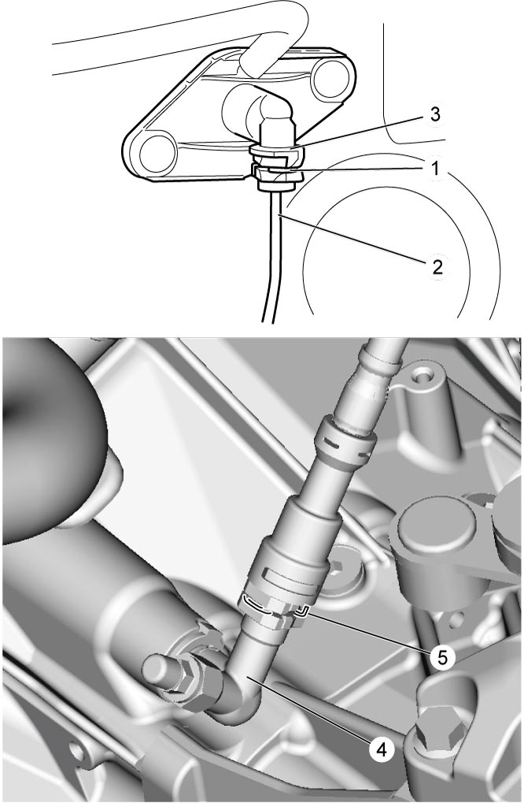

5C
| Clutch Fluid Pipe Removal and Installation |
NOTICE:
Brake fluid is extremely damaging to painted surfaces.
If brake fluid contacts painted surfaces, immediately wipe it off and flush the surfaces with water thoroughly.
Removal
1)Remove air cleaner assembly. 
2)Remove battery and battery tray.
3)Remove dust and dirt from each joint of pipe to be disconnected and clean around brake master cylinder reservoir cap.
4)Remove fluid from brake master cylinder reservoir with syringe or the like.
5)Pull out clamp (1) at clutch master cylinder (3) and pull out clamp (5) at fluid pipe joint (4), to disconnect clutch fluid pipe (2).


 "Expand image")
6)Pull out clamps at clutch fluid pipe, to disconnect clutch fluid pipe.
Installation
Reverse removal procedure noting the following points.
•Install each clamp securely.
•After installation, check clutch pedal free travel.
•After installation, bleed clutch system.
•Check fluid leakage.
•Add fluid to MAX level of reservoir.
•After installation, check clutch pedal free travel.
•After installation, bleed clutch system.
•Check fluid leakage.
•Add fluid to MAX level of reservoir.